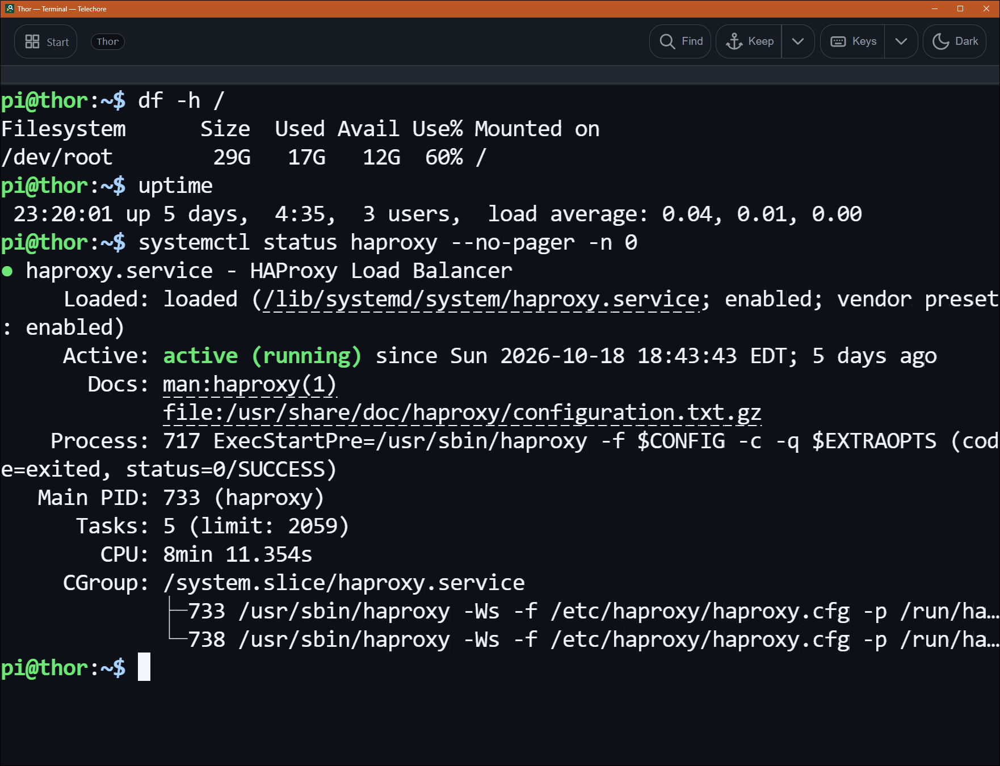
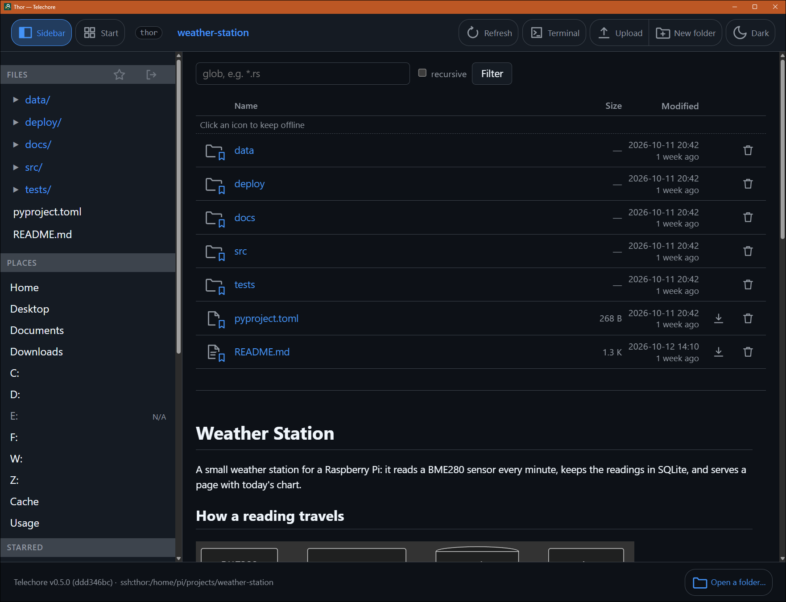

Telechore
An SSH client for a phone or a desktop: browse a server's files as a tree, with the selected file beside it, and work in its terminal.
Telechore shows a folder as a tree, on this device or on a server over SSH, and renders what you select: source with highlighting, Markdown, images, PDF. Its terminal uses the same connection, so it needs no second login. Nothing needs to be installed on the server; a standard SSH server is enough.

Get Telechore
Download goes to the releases on GitHub, which carry
Telechore for Linux — a .deb, an .rpm, and the
plain binary — beside treesight. A copy from a store
is the free edition: two servers, and two terminals kept running, on Google Play,
where Pro lifts both for one payment with no subscription; four of each on the
Microsoft Store, which does not sell Pro yet.
What's new in each version.
What it does
- Files on a server, as a tree. Open, render and download them; make folders and upload. What you opened stays readable offline.
- A terminal that keeps its size while the keyboard comes and goes, so full-screen programs keep their layout. Two fingers pan and zoom.
- The keys a phone lacks — Esc, Tab, Ctrl, Alt, the arrows — over the terminal or above the system keyboard, or a full keyboard of its own with the phone on its side.
- Keep a terminal running when you leave it, and come back to it as you left it.
- Servers move between devices by a QR code, encrypted with a password if you set one. Host keys are checked as in any SSH client.
- No account, no analytics, no ads. The only traffic is to the machine you connect to, and, for a copy from a store, to the store you installed it from.
Screenshots


Using Telechore
The same pages the app carries under Usage, for the latest release.
- Servers — saving one, how a login is chosen, keys, and host keys.
- The terminal — a shell on the machine you are browsing, and keeping it running when you leave it.
- Games — Termoasis's console games, kept like a terminal, and in a browser.
- Files offline — what is kept of a server on this device, Keep offline, and the Cache place.
- Granting folders — how opening a folder works on Android, where there are no paths to browse.
- Opening folders — the start page, Places, Starred and Recent.
- Tree and sidebar — the two halves of the window.
- Reading files — what gets rendered.
- Preferences — theme, line numbers, the sidebar, printing.
- Keyboard — every shortcut there is.
- Licences — the open-source software Telechore is built with, and its licences.
Games
Telechore carries eighteen of Termoasis's console games — 2048, Sudoku, Mines, Snake, Life and more — under Games in its pane, run in the app and kept, like a terminal, if you want one to go on while you are elsewhere. They play here too, in the browser, by the same engine.
Just the file browser
Telechore is built on treesight, an open-source tree browser for the folders on your own machine, without servers or the terminal. Its releases carry treesight on its own, and Telechore's Linux build.